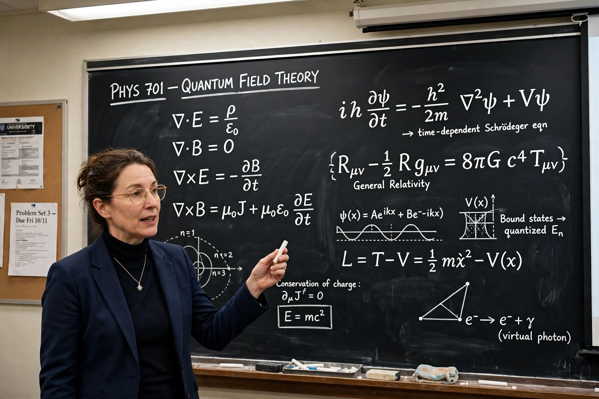

| Born | 1 October 1922, Hefei, China |
|---|---|
| Died | 18 October 2025, Beijing (aged 103) |
| Fields | Particle physics, statistical mechanics |
| Known for | Parity nonconservation (with Tsung-Dao Lee); Yang-Mills theory (with Robert Mills) |
| Awards | Nobel Prize in Physics 1957 |
Chen-Ning Franklin Yang (born 1922) is a Chinese-American theoretical physicist who shared the 1957 Nobel Prize with Tsung-Dao Lee for work showing that parity is not conserved in weak interactions.
Career
Educated at National Southwestern Associated University and the University of Chicago (PhD 1948, under Edward Teller), Yang worked at the Institute for Advanced Study and Stony Brook University. In later life he moved to Tsinghua University in Beijing.
Contributions
With Robert Mills he developed non-abelian gauge theory - Yang-Mills theory - the mathematical foundation of the Standard Model. He also contributed the Yang-Baxter equation, the Lee-Yang theorem in statistical mechanics, and work on superconductivity and Bose-Einstein systems.
Legacy
Yang is regarded as one of the most influential physicists of the 20th century; his gauge theory underpins modern particle physics.